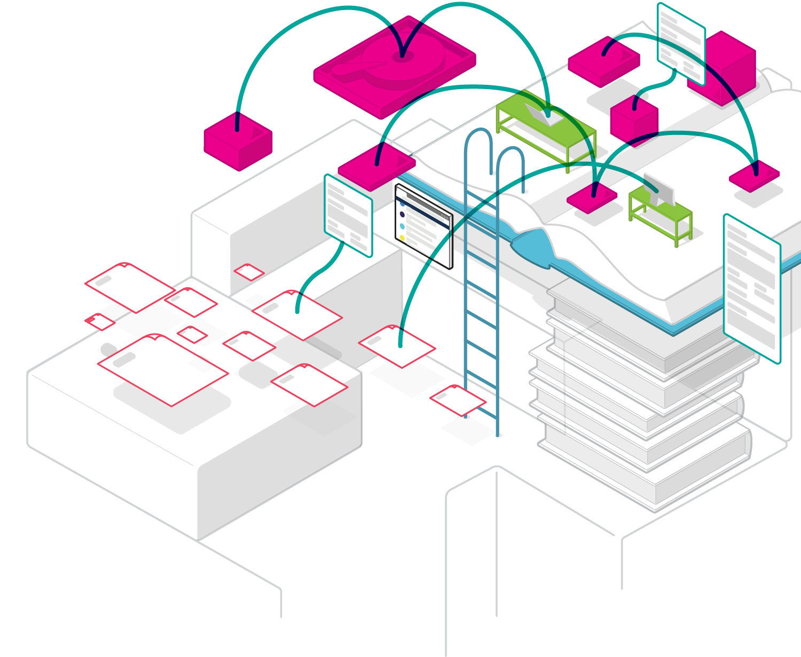

Exploring Community-Driven Data Stewardship
We examine models for distributed stewardship of data through community-led reading and discussion groups.
Our conversations aim to decompose how decentralized and peer-to-peer web infrastructure can enable communities to access, discover, verify, and preserve data they care about.

Data Together is an ongoing and inclusive conversation, an open source community, and a collaboration. Our monthly reading group focuses on the intersection of information and ethics.
Reading
We discuss conceptual frameworks for information networks through the lens of decentralized and peer-to-peer systems infrastructure.
We study patterns in technology, society, and ethics and their impact on the actors they involve.
Media
Join Us
Get involved or contribute by reading our previous blog posts and discussions or joining our future reading group discussions that interest you!